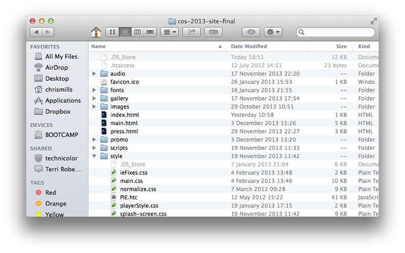
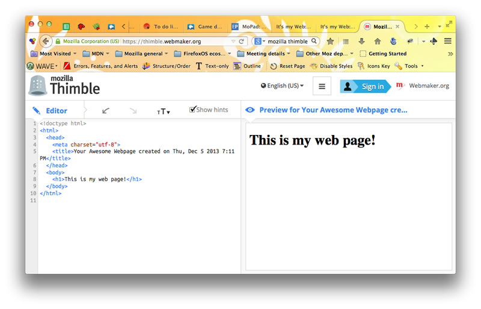

চলুন সরাসরি সামনে আগাই এবং কিছু ব্যবহারিক কাজ করি। ওয়েব কোড শেখার জন্য আমরা যে প্রধান টুল এখানে ব্যবহার করব সেটা হচ্ছে থিম্বল। আমরা মোজিলা থিম্বল কে এক নজরে দেখে কাজ শুরু করব এবং নিজেরাই কিছু কোড লিখব। তারপরে কাজ করার জন্য একটা প্রোজেক্ট নির্ধারণ করব এবং পরবর্তী সপ্তাহগুলোতে কি করব সেটা নিয়ে চিন্তা করবো।
মোজিলা থিম্বল পরিচিতি
মোজিলা থিম্বল ওয়েব কোডের বেসিক শেখার জন্য একটা ভালো টুল, কারন এটা একটা সহজ পরিবেশে আপনাকে কোড নিয়ে খেলা করার সুযোগ দেয়। যখন একটা বাস্তব ওয়েবসাইট নিয়ে আপনি কাজ করবেন, আপনাকে অনেক ফাইল একসাথে পরিচালনা করতে হবে, তাদের কে একসাথে কাজ করাতে হবে। উধাহরনস্বরূপ, একটা ওয়েবসাইটের কাঠামো নিচের মত হতে পারে :
একজন নবীশের জন্য এইগুলো নিয়ে একসাথে কাজ করাটা বেশ কষ্টসাধ্য; সকল ফাইলকে একসাথে কাজ করাতে আপনাকে তাদের বারবার ওয়েব ব্রাউজারে টেস্ট করে দেখতে হবে। থিম্বল এই সকল জটিলতা নিরসন করে পুরো ব্যাপারটাকে একটা ওয়েবসাইটের মাধ্যমে পরিচালনা করে। নিচের ছবিতে আপনি দেখতে পাবেন বাম পাশে আপনার কোড লেখা, এবং ডান পাশের উইন্ডোতে স্বয়ংক্রিয়ভাবে আপনার ফলাফল দেখা যাচ্ছে:
আপনার ফলাফল দেখার উইন্ডো স্বয়ংক্রিয়ভাবে আপডেট হবে যখন আপনি আপনার কোড পরিবর্তন করবেন। জার ফলে, আপনি:
- দেখতে পাবেন আপনি কোথাও ভুল করছেন কিনা: থিম্বল সেই গুলোকে আপনার জন্য হাইলাইট করে দিবে
- টেক্সট সাইজ বৃদ্ধি করতে পারবেন, যদি আপনি তাদের বড় করে দেখতে চান
- কোন ভুল হলে সেটা পূর্বের অবস্থাতে ফিরিয়ে আনতে অর্থাৎ undo করতে পারবেন
- আপনার তৈরিকৃত সাইট প্রকাশ করতে পারবেন, যাতে অন্যরা আপনার সৃষ্টিশীলতা জানতে পারে
- অন্যদের কাজকে নতুন করে করতে পারবেন এবং নিজের মত করে ভার্সন তৈরি করতে পারবেন
থিম্বলে প্রথম ধাপ
চলুন কিছু কোড তৈরির মাধ্যমে মজা করা যাক:
- থিম্বল চালু করুন আপনার ওয়েব ব্রাউজারে
- এখন আপনাকে থিম্বলে সাইন ইন করতে হবে। এটা করার জন্য উপরের ডানপাশে"Sign in" বাটনে ক্লিক করুন, আপনার ইমেইল এবং পাসওয়ার্ড দিন,এবং আবারাও"Sign in" লেখাতে ক্লিক করুন
- যদি আপনি এই প্রথম থিম্বল চালান (হয়ত আপনাদের অধিকাংশের ক্ষেত্রে) তাহলে থিম্বলে আপনার জন্য একটা ইউজার নাম চাওয়া হবে। যেমন, আমার https://chrisdavidmills.makes.org/ । লক্ষ্য করুন: আপনি অবশ্যই এমন একটা নাম বাছুন যেটা সত্যি নয়। আমার নামটা সত্য কারন আমার চাকরির জন্য এটা প্রয়োজন।কিন্ত eSafety এর কথা খেয়াল রেখে, আপনি অবশ্যই ওয়েবে নিজের বাক্তিগত তথ্য দিবেন না। eSafety নিয়ে পরবর্তীতে আলোচনা করা হবে।
- একনজরে ইন্টারফেসটা দেখে নিন। চেষ্টা করুন
<p>এবং</p>এই ট্যাগের ভিতরে লেখা টেক্সট পরিবর্তন করতে এবং আপনি ডানে তার প্রিভিউ দেখতে পাবেন।
থিম্বলে নিজের নাম কি দিবেন ভেবে পাচ্ছেন না? আপনার কি প্রিয় কোন কিছুই নেই, অথবা কোন ডাকনাম,অথবা এমন কিছু যা আপনি আগে বাস্তবে আপনার জীবনে ব্যবহার করেছেন নিজের পরিচিতির জন্য?যেমন ধরুন darkman2000, ponystable, অথবা skateordie এইধরনের কিছু একটা।
আমরা কিন্ত এর ভিতরেই কিছু ওয়েব কোডিং করে ফেলেছি। চলুন আরও কিছু কোডিং করা যাক, যাতে আপনি বুঝতে পারেন এগুলো কিভাবে কাজ করে
HTML এর কাঠামো
HTMLএকটি মার্কআপ ল্যাংগুয়েজ যা আপনার পুরো ওয়েবসাইটের কাঠামোকে এবং প্রতিটা অংশের কাজকে নির্দেশ করে। (যেমন, এটা একটা হেডিং, এটা একটা প্যারাগ্রাফ,ইত্যাদি...)যদি একটা ওয়েবসাইট কে ঘরের সাথে তুলনা করি, HTML হবে সেই ঘরের কাঠামোর ইট এবং কাঠ। HTML হচ্ছে সেটাই যা আপনি একটি নতুন থিম্বল পেজের শুরুতে দেখতে পান। আরেকটা জরুরী ব্যাপার হচ্ছে, HTML অনেকটাই একটি Microsoft Word document এর মত কাজ করে। যখন আপনি আপনার টেক্সট কে প্যারাগ্রাফে পরিবর্তন করছেন অথবা একটা শব্দের রঙ পরিবর্তন করছেন কিংবা আপনার ডকুমেন্টে একটা ছবি যোগ করছেন, তখন আপনি মার্কআপ ব্যবহার করছেন।
HTML সাধারণত সব কন্টেন্ট কে tag এর ভিতরে মুড়িয়ে কাজ করে।প্রতি ক্ষেত্রে, ওপেনিং ট্যাগ (যেমন <p>) যেখান থেকে কাজ শুরু হবে সেটা নির্দেশ করে, এবং ক্লোজিং ট্যাগ (যেমন </p>) কাজের সমাপ্তি বোঝায়। ওপেনিং ট্যাগ এবং তার ভিতরের কন্টেন্ট এবং ক্লোজিং ট্যাগ কে একত্রে element বলে। তবে কিছু HTML এলিমেন্ট আছে যারা একটু ভিন্ন ভাবে কাজ করে, তবে আমরা সেইগুলা পরে দেখব।
ডকুমেন্টের প্রধান অংশগুলো হচ্ছে :
- DOCTYPE: এটা সব থেকে উপরে লেখা হয়
<!doctype html>, এবং কিছু জটিল কারনে এটা আপনার ডকুমেন্টের সব থেকে উপরেই থাকবে।এটা অনেকটা নীতিমালার মত যা HTML ডকুমেন্টের নিয়ম গুলো নির্দেশ করে এবং সেইগুলোই ডকুমেন্টে মান্য করা হয়। - The head: ডকুমেন্টের হেড এর ভিতরের সবকিছু
<head>এবং</head>ট্যাগের ভিতরে থাকে। সাধারণত এখানে আপনার কাজের সব কনফিগারেশন এবং সেটিংস থাকে। যেমন, এটার লেখক কে,স্টাইলিং এর তথ্য, বর্ণনামূলক কিওয়ার্ড ইত্যাদি... - The body: ডকুমেন্টের বডির ভিতরের সবকিছু
<body>এবং</body>ট্যাগের ভিতরে থাকে।এখানেই আপনি সেই সবকিছু দিবেন যা আপনি আপনার ওয়েবসাইটে দেখাতে চান।
চলুন সামান্য কিছু HTML কোড লেখি যাতে এইসব সম্বন্ধে ধারনা হয়। নিচের কোডের এলিমেন্ট গুলোর মত করে আরও একটা এলিমেন্ট যোগ করার চেষ্টা করুন। আপনি চাইলে ট্যাগের ভিতরের লেখা যত খুশি পরিবর্তন করতে পারেন,কিন্ত ট্যাগগুলোকে পরিবর্তন করবেননা।
<h1>My website is all about food</h1>
<p>I <strong>love</strong> food. It is what I look forward to
<em>every</em> morning, lunchtime and evening. My favourite foods are
as follows:</p>
<ul>
<li>Cheese</li>
<li>Curry</li>
<li>Chocolate</li>
<li>Seafood</li>
</ul>
<h2>Cheese</h2>
<img src="http://venturebeat.files.wordpress.com/2010/05/
cheese_oh_cheese.jpg" alt="a piece of cheese">
<p>Let's start with cheese. Cheeses are like an international culture
trip, with every country having its own famous varieties.</p>
<p>For more information on cheese, go to
<a href="http://www.cheese.com/">Cheese.com</a></p>সৌন্দর্যের জন্য CSS
CSS হচ্ছে আপনার ওয়েবসাইটের চেহারা কেমন হবে তা নির্ধারণ করার প্রধান পদ্ধতি, যেমন, ফন্ট, রঙ, স্পেসিং, এনিমেনশন ইত্যাদি। আমাদের সেই আগের মত বাড়ির ধারনাতে ফিরলে, CSS হচ্ছে রঙ, কার্পেট, ওয়ালপেপার এবং অন্যান্য সামগ্রী যা আমাদের ঘর কে সুন্দর করতে ব্যবহারিত হয়।
CSS কিছু নিয়মের ভিত্তিতে কাজ করে। তার একটি নিয়ম হচ্ছে selector, যেটা নির্দেশ করে আপনি কোন element, অথবা কোন কোন element কে সাজানোর জন্য নির্বাচন করছেন।তারপরে আপনি কিছু নির্দেশ দিবেন যে, আপনি নির্বাচিত অংশের কোন কোন বিষয়গুলো কে পরিবর্তন করতে চান এবং তার জন্য নির্দিষ্ট ম্যান বসিয়ে দিবেন। চলুন আমাদের পেজে একটা উদাহরন যোগ করা যাক
প্রথমত, আপনার headএলিমেন্টের মধ্যে একটি styleএলিমেন্ট যোগ করুন। সবথেকে ভালো হয় এই অংশের ঠিক আগে বসালে </head> । এইজন্যে দুইটা নতুন লাইন যোগ করুন নিচের মত করে :
<style>
</style>ওপেনিং এবং ক্লোজিং ট্যাগের মধ্যে নিচের সিএসএস এর নিয়মটি যোগ করুন:
h1 {
color: blue;
}চলুন আরও কিছু জিনিস পরিবর্তন করি:
h1 {
color: blue;
font-size: 30px;
background-color: yellow;
border-radius: 10px;
border: 2px solid green;
padding: 10px;
}লক্ষ্য করুন যে আপনাকে আমেরিকান স্পেলিং ব্যবহার করতে হবে। এটা অত্যাবশ্যক, নতুবা আপনার কোড চলবেনা।
আপনি চাইলে রঙ বা অন্যান্য জিনিস পরিবর্তন করতে, অথবা অন্য যেকোন এলেমেন্ট এর সাথে এই ধরনের পরিবর্তন করতে পারেন। এই জন্যে আপনি h1 কে অন্য কোন ট্যাগের সাথে বদলে দেখতে পারেন।
ইন্টারঅ্যাক্টিভিটির জন্য জাভাস্ক্রিপ্ট
জাভাস্ক্রিপ্ট আপনার ওয়েবসাইটে আরও উন্নত ধরনের সুবিধা এবং ইন্টারঅ্যাক্টিভিটি যোগ করতে ব্যবহার করা হয়। পূর্বের সেই বাড়ির ধারনা অনুসারে, জাভাস্ক্রিপ্ট আপনার ঘরের উন্নত ধরনের অপ্রধান সুবিধা, যেমন, টিভি, এক্সবক্স, মাইক্রোওয়েব ওভেন এই কোর্সে আমরা জাভাস্ক্রিপ্ট শিখবনা, তবে আমার মতে এটা আপনাদের জন্য সুবিধাজনক হবে যদি আমি এটা দেখতে কেমন সে সম্বন্ধে আপনাদের ধারনা দেই। জাভাস্ক্রিপ্ট অনেক অংশে সিএসএস এর মত করে কাজ সম্পন্ন করে, এটা অনেক বেশী জটিল এবং সুবিধাজনক। এটির মাধ্যমে আপনি আপনার পেজের যেকোনো এলিমেন্ট সিলেক্ট করতে এবং পরিবর্তন করতে পারেন, তবে আপনি চাইলে এর মাধ্যমে আরও অনেক কিছু করতে পারেন।
আপনার পেজে নিচের অংশের মত করে কোড যোগ করুন দেখি এটা দিয়ে আপনি কাজ করতে পারেন কিনা। ভুল হলেও ভয় পাবেন না ! প্রথমেই কিছু নিউ এলিমেন্ট; এগুলোকে body এর যেকোনো অংশে দিটে পারেন।
<p>Enter your name:</p>
<form><input type="text" id="input-box"></form>
<p id="message-box">Hello!</p>এবার পেজে কিছু জাভাস্ক্রিপ্ট যোগ করুন। যদিও এটা যেকোনো স্থানে বসাতে পারেন, তবে বডিরক্লোজিং </body> ট্যাগের ঠিক আগে বসানো ভালো, যাতে করে জাভাস্ক্রিপ্ট কাজ করার আগে বডির সকল এলিমেন্ট সঠিক ভাবে লোড হয়।
<script>
var inputBox = document.getElementById('input-box');
var messageBox = document.getElementById('message-box');
inputBox.oninput = function() {
messageBox.innerHTML = "Hello, " +
inputBox.value + "! Nice to see you!";
}
</script>eSafety
ওয়েব একটি চমৎকার বস্ত, সমাজে এর অনেক ভালো দিক রয়েছে। তবুও,অন্যান্য ভালো জিনিসের মত, এখানেও কিছু খারাপ মানুষ আছে যারা ওয়েবের অপব্যবহার করে, যেমন হুমকি প্রদান বা তথ্য চুরি। এই কারনেই নিজের ওয়েবপেজে আপনার পুরনাঙ্গ তথ্য দিবেন না — আপনার পুরো নাম, ছবি, কোথায় থাকেন, কোথায় ভ্রমন করেম অথবা এই ধরনের যেকোনো তথ্য আপনাকে বা আপনার বন্ধু-বান্ধবদের নিয়ে।
কোন কোন ক্ষেত্রে বাস্তবে দেখা গেছে:
- বয়স্করা অনলাইনে বাচ্চাদের মতন আচরন করে, তাদের সাথে বন্ধুত্ব করে, দেখা করতে চায় ও দেখা করতে চায়, এবং তখন তাদের কে হুমকি দেয় বা কিডন্যাপ করে।
- অনেক মানুষ অন্যান্যদের অপ্রস্তুত মুহূর্তের ছবি তুলে সেটা অনলাইনে হাজারো মানুষের সাথে শেয়ার করে, ফলে জার ছবি তিনি বোকা বনে যান এবং সত্যিকার ভাবে কষ্ট পান।
- মানুষ অন্যের তথ্য চুরি করে নিজের বলে চালিয়ে দিতে চায় এবং কখনো ব্যাংক অ্যাকাউন্ট থেকে টাকা উঠিয়ে নেয়।
- মানুষ অন্য মানুষেরবিভিন্ন সামাজিক যোগাযোগ মাধ্যমের পাসওয়ার্ড হাতিয়ে নেয়, এবং এমন কিছু করে যাতে মনে হয় ঐ মানুষ অনলাইনে বাজে কথা বা কাজ করে।
মনে রাখতে হবে যে ওয়েববিশ্বজনীন, এখানে যে কেউ বা যেকোনো স্থান থেকে ব্যবহার করা সম্ভব। আপনি অনুমান করতে পারবেন না, যে আপনি যাদের সাথে অনলাইনে 'যোগাযোগ' করছেন তারা আসল কিনা।
ওয়েব ব্যবহারের এবং নিরাপদ থাকার বেশ কিছু পদ্ধতি আছে :
- বিশেষ ধরনের নাম/ছবি ব্যবহার করুন (আপনার আসল নাম থেকে আলাদা)
- নিজের অবস্থান বা ব্যাক্তিগত তথ্য অনলাইনে প্রদান করা থেকে বিরত থাকুন। এবং পরিবার বা বন্ধুদের তথ্য প্রদান থেকে বিরত থাকুন
- কাউকেই আপনার লগিন ডিটেলস বা পাসওয়ার্ড প্রদান করবেন না।
এই সাধরন নিয়মগুলো কে অনুসরন করুন এবং একটি নিরাপদ ওয়েবে আপনি অনেক দূর এগিয়ে যাবেন।
রিমিক্স করার জন্য একটা প্রোজেক্ট নির্বাচন
আমি আপনাদের জন্য বেশ কিছু টেম্পলেট তৈরি করেছি যাতে আপনারা শুরু করতে পারেন, শুন্য থেকে একটা ওয়েবসাইট তৈরি করাই ঐতিহ্যবাহী। নিচের যেকোনো একটকে নির্বাচন করুন, আমরা পরবর্তীতে সেগুলোকে নিজেরাই তৈরি করবো। আপনারা এইগুলোকে নির্বাচন করতে পারেন:
- একটি শুন্য পাতা থেকে শুরু করুন, পুরোটাই নিজের মত করে করুন।
- বেসিক পেজের টেম্পলেট (সাধারন এক কলামের পেজ)
- আমার শখ (আনুভূমিক স্ক্রলিং সাইট)
- একটি ডাইরি (একটু জটিল এক কলামের সাইট)
- নিজের কমিক্স তৈরি করুন (লেআউটটা বেশ জটিল কিন্তু পরিবর্তন করা সহজ )
- একটি ফ্যান পেজ (দুই কলামের জটিল সাইট)
- হ্যারি পটারের সংবাদপত্র (জটিল, একাধিক কলাম)
এইগুলো আপনার কাজে লাগতে পারে থিম্বলেওয়েবসাইট পরিকল্পনা করার কৌশল । এটা আপনাকে আরও সাহায্য করবে যখন আপনি চিন্তা করবেন আপনার ওয়েব সাইট কি নিয়ে হবে।আপনি চাইলে আরও ছোট একটা সুন্দর লেখা পড়তে পারেন ওয়েব এর জন্য ডিজাইনিং.